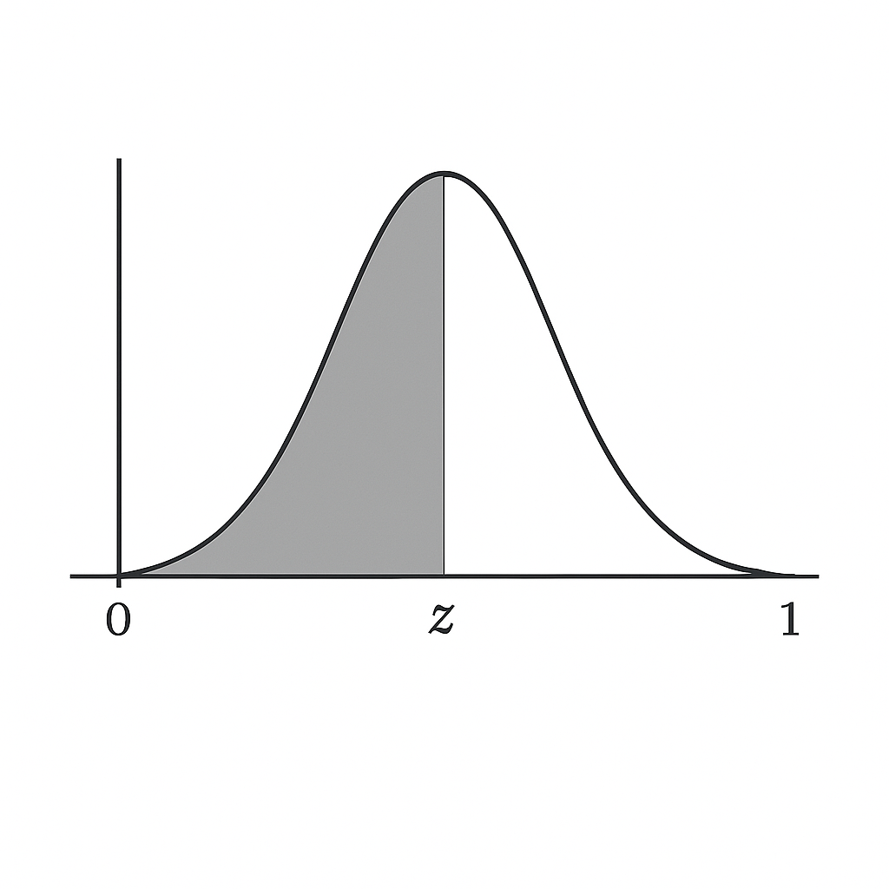

outcomes <- c("Heads", "Tails")
total_outcomes <- length(outcomes)
favorable_outcomes <- length(outcomes[outcomes == "Heads"])
classical_prob <- favorable_outcomes / total_outcomes
classical_prob[1] 0.5Bioestadística Fundamental y Estadística Fundamental para las Ciencias de la Salud
Jose Miguel Leon Puentes
Departamento de Estadística
Universidad Nacional de Colombia
En este módulo exploraremos las funciones de masa de probabilidad para variables discretas y las funciones de densidad de probabilidad (pdf) para variables continuas. Comprenderemos cómo estas funciones nos permiten describir la probabilidad de que un evento ocurra en un conjunto de datos biológicos. También, profundizaremos en conceptos clave como el valor esperado y la varianza, que nos ayudan a caracterizar el centro y la dispersión de una distribución.
Aprenderás a utilizar el poder de R para trabajar con diferentes distribuciones de probabilidad. Cada distribución en R tiene cuatro funciones clave, identificadas por un prefijo:
p: para la función de distribución acumulada (cdf) en un valor particular.
q: para los cuantiles (la función inversa de la cdf) correspondientes a una probabilidad particular.
d: para la función de densidad (pdf) en un valor particular.
r: para la generación de valores aleatorios de una distribución particular.
Distinguir y aplicar las funciones de masa de probabilidad para variables discretas y las funciones de densidad para variables continuas.
Calcular el valor esperado y la varianza para caracterizar distribuciones de probabilidad.
Implementar en R los métodos de conteo como combinaciones, permutaciones y factoriales.
Dominar las cuatro funciones clave (p, q, d, r) para trabajar con las principales distribuciones de probabilidad en R.
Resolver problemas prácticos de probabilidad, utilizando R como alternativa a las tablas estadísticas para obtener valores de distribución.
Interpretar y generar datos pseudo-aleatorios a partir de distribuciones específicas en R, comprendiendo la importancia de la replicabilidad.
La probabilidad clásica se basa en el principio de resultados igualmente probables. Si un experimento tiene un espacio muestral finito \(S\) con \(n\) resultados igualmente probables, y \(A\) es un evento de interés dentro de \(S\), la probabilidad clásica se define como: \[P(A)=\dfrac{n({A})}{n(S)}\] Donde:
\(P(A)\): probabilidad del evento
\(n(A)\): número de resultados favorables al evento
\(n(S)\): número total de resultados posibles en el espacio muestral \(S\).
En resumen, la probabilidad de un evento se obtiene dividiendo el número de resultados favorables entre el total de resultados igualmente probables.
Lanzar una Moneda
Calculemos la probabilidad de obtener Cara (Heads) al lanzar una moneda justa.
outcomes <- c("Heads", "Tails")
total_outcomes <- length(outcomes)
favorable_outcomes <- length(outcomes[outcomes == "Heads"])
classical_prob <- favorable_outcomes / total_outcomes
classical_prob[1] 0.5Se define un experimento de lanzar una moneda:
outcomes <- c("Heads", "Tails"): crea un vector con los dos posibles resultados: “Cara” y “Cruz”.
total_outcomes <- length(outcomes): obtiene el número total de resultados posibles, en este caso 2.
favorable_outcomes <- length(outcomes[outcomes == "Heads"]): cuenta los resultados favorables, es decir, cuántas veces aparece “Cara” en el vector (1 vez).
classical_prob <- favorable_outcomes / total_outcomes: calcula la probabilidad clásica dividiendo los resultados favorables entre el total (1/2 = 0.5).
classical_prob: muestra la probabilidad de obtener “Cara” al lanzar una moneda justa, que es 0.5.
Baraja de Cartas
Calcular la probabilidad de sacar una espada de una baraja estándar de 52 cartas.
deck <- rep(c("Spades", "Hearts", "Diamonds", "Clubs"), each = 13)
total_cards <- length(deck)
spades <- length(deck[deck == "Spades"])
classical_prob_spade <- spades / total_cards
classical_prob_spade[1] 0.25Este código nos ayuda a calcular la probabilidad de sacar una pica de una baraja normal. Como hay 52 cartas en total y 13 de ellas son picas, la probabilidad de sacar una pica es de 13 sobre 52, lo que se puede simplificar a 1 sobre 4 o 25 %. Por lo tanto, al sacar una carta de una baraja normal, hay un 25 % de probabilidad de que sea pica.
Como parte del material complementario del módulo se recomienda la lectura de la introducción a la probabilidad desde la parte histórica disponible a través del siguiente link Chapter 9 Introduction to probability del libro Learning Statistics with R de Danielle Navarro.
Fórmula
\[ n! = n \cdot (n-1) \cdot (n-2) \cdots 2 \cdot 1, \quad n \geq 0 \]
Propiedad especial \[0! = 1\]
Implementación en R
Fórmula
Número de formas de ordenar \(n\) elementos distintos:
\[P(n) = n!\]
Número de permutaciones de \(n\) elementos tomados de \(k\):
\[P(n,k) = \frac{n!}{(n-k)!}, \quad 0 \leq k \leq n\]
Implementación en R
Fórmula
Si hay \(n\) elementos con grupos repetidos de tamaños \(n_1, n_2, \dots, n_r\):
\[P = \frac{n!}{n_1! \, n_2! \cdots n_r!}\]
Implementación en R
Fórmula
Número de formas de elegir \(k\) elementos de un conjunto de \(n\):
\[C(n,k) = \binom{n}{k} = \frac{n!}{k!(n-k)!}, \quad 0 \leq k \leq n \]
Generar Combinaciones
Suponga que desea generar todas las combinaciones de \(n\) elementos (items) tomando \(k\) cada vez.
Otro ejemplo sería generar todas las combinaciones de los números 1 al 5 tomando de a tres:
[,1] [,2] [,3] [,4] [,5] [,6] [,7] [,8] [,9] [,10]
[1,] 1 1 1 1 1 1 2 2 2 3
[2,] 2 2 2 3 3 4 3 3 4 4
[3,] 3 4 5 4 5 5 4 5 5 5Esta función combn() no se restringe a números. Tambien podemos generar combinaciones de cadenas de caracteres:
Fórmula
Número de formas de elegir \(k\) elementos de un conjunto de \(n\) con repetición:
\[ C_r(n,k) = \binom{n+k-1}{k} \]
Implementación en R
Fórmula
Para particionar \(n\) elementos en \(k\) grupos de tamaños \(n_1, n_2, \dots, n_k\):
\[\binom{n}{n_1, n_2, \dots, n_k} = \frac{n!}{n_1! \, n_2! \cdots n_k!}, \quad \sum_{i=1}^k n_i = n\]
Función de Masa de Probabilidad
\[P(X = x) = \frac{1}{b-a+1}, \quad x = a, a+1, \dots, b\]
Valor Esperado
\[ E[X] = \frac{a+b}{2} \]
Varianza
\[ Var(X) = \frac{(b-a+1)^2 - 1}{12} \]
Implementación en R
Función de Masa de Probabilidad \[ P(X = x) = p^x (1-p)^{1-x}, \quad x \in \{0,1\} \] Valor Esperado \[ E[X] = p \] Varianza \[ Var(X) = p(1-p) \] Implementación en R
Función de Masa de Probabilidad
\[ P(X = x) = \binom{n}{x} p^x (1-p)^{n-x}, \quad x = 0,1,\dots,n \]
Valor Esperado
\[ E[X] = np \]
Varianza
\[ Var(X) = np(1-p) \]
Implementación en R
Función de Masa de Probabilidad
\[ P(X = x) = \binom{x+r-1}{x} (1-p)^x p^r, \quad x = 0,1,2,\dots \]
Valor Esperado
\[ E[X] = r \frac{1-p}{p} \]
Varianza
\[ Var(X) = r \frac{1-p}{p^2} \]
Implementación en R
Función de Masa de Probabilidad
\[ P(X = x) = (1-p)^{x-1}p, \quad x = 1,2,3,\dots \]
Valor Esperado
\[ E[X] = \frac{1}{p} \]
Varianza
\[ Var(X) = \frac{1-p}{p^2} \]
Implementación en R
Función de Masa de Probabilidad
\[ P(X = x) = \frac{\binom{K}{x} \binom{N-K}{n-x}}{\binom{N}{n}}, \quad x = 0,1,\dots,n \]
Valor Esperado
\[ E[X] = n \frac{K}{N} \]
Varianza
\[ Var(X) = n \frac{K}{N}\left(1-\frac{K}{N}\right)\frac{N-n}{N-1} \]
Implementación en R
Función de Masa de Probabilidad
\[ P(X = x) = \frac{\lambda^x e^{-\lambda}}{x!}, \quad x = 0,1,2,\dots \]
Valor Esperado
\[ E[X] = \lambda \]
Varianza
\[ Var(X) = \lambda \]
Implementación en R
\(Hg(N,M,n)\longrightarrow Bin(n,p)\)
Sea \(0<p<1\). Si \(N\), \(M\longrightarrow\infty\) , de tal forma que \(\frac{M}{N} \longrightarrow p\). El Tamaño de la población \(N\) es “grande” en comparación con el tamaño de la muestra \(n\), es decir, \(\frac{n}{N}\longrightarrow 0\)
\(Bin(n,p) \longrightarrow Poi(\lambda)\) si \(0<p<1\) y \(n\cdot p \longrightarrow \lambda\) cuando \(n \longrightarrow \infty\) . Se tiene un \(n\) muy “grande” comparado con un \(p\) muy “pequeño”
Función de Densidad de Probabilidad
\[ f(x) = \begin{cases} \frac{1}{b-a}, & a \leq x \leq b \\ 0, & \text{en otro caso} \end{cases} \]
Valor Esperado
\[ E[X] = \frac{a+b}{2} \]
Varianza
\[ Var(X) = \frac{(b-a)^2}{12} \]
Implementación en R
Función de Densidad de Probabilidad
\[ f(x) = \frac{1}{\sqrt{2\pi\sigma^2}} \exp\left( -\frac{(x-\mu)^2}{2\sigma^2} \right), \quad -\infty < x < \infty \]
Valor Esperado
\[ E[X] = \mu \]
Varianza
\[ Var(X) = \sigma^2 \]
Implementación en R
Función de Densidad de Probabilidad
\[ f(x) = \frac{\beta^\alpha}{\Gamma(\alpha)} x^{\alpha - 1} e^{-\beta x}, \quad x > 0 \]
Valor Esperado
\[ E[X] = \frac{\alpha}{\beta} \]
Varianza
\[ Var(X) = \frac{\alpha}{\beta^2} \]
Implementación en R
Función de Densidad de Probabilidad
\[ f(x) = \lambda e^{-\lambda x}, \quad x \geq 0 \]
Valor Esperado
\[ E[X] = \frac{1}{\lambda} \]
Varianza
\[ Var(X) = \frac{1}{\lambda^2} \]
Implementación en R
Función de Densidad de Probabilidad
\[ f(x) = \frac{1}{2^{k/2}\Gamma(k/2)} x^{k/2 - 1} e^{-x/2}, \quad x \geq 0 \]
Valor Esperado
\[ E[X] = k \]
Varianza
\[ Var(X) = 2k \]
Implementación en R
Función de Densidad de Probabilidad
\[ f(x) = \frac{\Gamma(\alpha + \beta)}{\Gamma(\alpha)\Gamma(\beta)} x^{\alpha - 1} (1-x)^{\beta - 1}, \quad 0 < x < 1 \]
Valor Esperado
\[ E[X] = \frac{\alpha}{\alpha + \beta} \]
Varianza
\[ Var(X) = \frac{\alpha \beta}{(\alpha + \beta)^2 (\alpha + \beta + 1)} \]
Implementación en R
| Distribution | Functions (CDF p*, Quantile q*, Density d*, Random r*) |
|---|---|
| Bernoulli | pbinom, qbinom, dbinom, rbinom (con size = 1) |
| Binomial | pbinom, qbinom, dbinom, rbinom |
| Negative Binomial | pnbinom, qnbinom, dnbinom, rnbinom |
| Geometric | pgeom, qgeom, dgeom, rgeom |
| Hypergeometric | phyper, qhyper, dhyper, rhyper |
| Poisson | ppois, qpois, dpois, rpois |
| Uniform (discrete) | No función directa, usar sample() o runif() con redondeo |
| Uniform (continuous) | punif, qunif, dunif, runif |
| Normal | pnorm, qnorm, dnorm, rnorm |
| Log Normal | plnorm, qlnorm, dlnorm, rlnorm |
| Cauchy | pcauchy, qcauchy, dcauchy, rcauchy |
| Exponential | pexp, qexp, dexp, rexp |
| Gamma | pgamma, qgamma, dgamma, rgamma |
| Chi-Square | pchisq, qchisq, dchisq, rchisq |
| Beta | pbeta, qbeta, dbeta, rbeta |
| Weibull | pweibull, qweibull, dweibull, rweibull |
| F | pf, qf, df, rf |
| Student t | pt, qt, dt, rt |
| Studentized Range | ptukey, qtukey, dtukey, rtukey |
| Logistic | plogis, qlogis, dlogis, rlogis |
| Wilcoxon Rank Sum Statistic | pwilcox, qwilcox, dwilcox, rwilcox |
| Wilcoxon Signed Rank Statistic | psignrank, qsignrank, dsignrank, rsignrank |
R como alternativa a las tablas de valores para las distribuciones.
La función pnorm() - Probabilidad Acumulada - Calcula la probabilidad acumulada hasta un valor q (z), por defecto corresponde al área a la izquierda de q.
Devuelve ≈ 0.975, que corresponde a la probabilidad de que una variable normal estándar sea menor o igual que 1.96.
A este resultado es al que llegaríamos buscando en la típica tabla de los anexos de los libros de probabilidad. Usted puede comprobar el resultado observando la primera columna de la primera tabla dirigiéndose hasta el valor 1.9 y luego desplazándose de manera horizontal hasta hacer una intersección con el valor .06 de la primera fila.